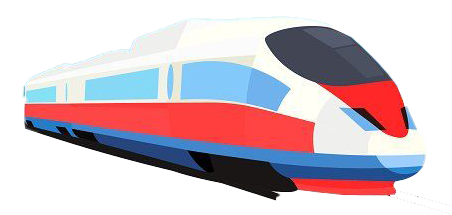
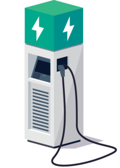

| Date | News / Activity |
|---|---|
| Sep 4, 2023 | Dr. Chen coauthored with two young and bright doctoral candidates– Shiyang Xiao (Syracuse University) and Boyuan Zhao (Florida International University) published an article “Machine Learning Meets the Journal of Public Budgeting & Finance: Topics and Trends over 40 Years” in the Journal of Public Budgeting & Finance. |
| Sep 1, 2023 | Welcome new doctoral student–Chaowang Ren to join iFPL. Chaowang received his MPP degree from Georgia Tech. He is very interested in infrastructure finance research. |
| Aug 23, 2023 | Dr. Chen was the leading instructor for GSU Center for State and Local Finance’s Public Finance Executive Training on Capital Budgeting and Budget Preparation. |
| Jun 1, 2023 | Dr. Chen was invited to attend the GPAL-National ACFR Database Project Meeting. He provided inputs on infrastructure assets accounting and reporting. |
| May 9, 2023 | Dr. Chen coauthored with Dr. Bart Hildreth and Keith Jacob published an article ” Why did states fail to take control over city-owned airports? A tale of three cities” in the Journal of Air Transport Management. |
| Apr 26, 2023 | Two doctoral students at our lab: Meera Omar and Meghna Paul co-represented a project report “State Tax Relief Measures During and After COVID-19” for the Fiscal Research Cluster’s Brown Bag Seminar. |
| Apr 21, 2023 | Dr. Chen was invited to attend the Public Finance Spring Conference 2023 held by the School of Public Policy at the University of Maryland, College Park. |
| Apr 13, 2023 | The three doctoral students at our lab: Meera Omar, Meghna Paul, Seun Odibo made their first conference presentations at the WSSA 2023 Conference (Public Budgeting and Finance Session). They presented topics on EV fee adoption, fiscal rule, political debt cycles, and legislative turnover and debt financing. Congrats! |
| Mar 15, 2023 | Dr. Chen was invited by Mr. Mark Funkhouser to join the editorial board for the International Center of Performance Auditing (ICPA). Mark Funkhouser is a former mayor of Kansas City, Missouri, and a former publisher of Governing. |
| Feb 27, 2023 | The Editor-in-Chief of the Journal of Public Finance and Management–Dr. Komla Dzigbede appointed Dr. Chen as the Symposium Editor. Public Finance and Management is an international interdisciplinary journal devoted to increasing knowledge of public finance and administration through policy analysis, empirical research, and theoretical inquiry. |
| Feb 22, 2023 | Dr. Chen was the leading instructor for the GSU Center for State and Local Finance’s Public Finance Executive Training on Capital Budgeting and Budget Preparation. Dr. Chen invited Dr. Carol Ebdon from the University of Nebraska Omaha as a guest speaker to discuss GFOA’s Distinguished Budget Preparation Award Program. |
| Jan 13, 2023 | Dr. Chen met with Jack Cebe (the Stitch Development Manager in Atlanta Downtown Improvement District) and discussed the potential partnerships about offering technical support to develop optimal infrastructure financing strategies for the Stitch Project. |
| Jan 1, 2023 | Happy New Year to ALL! iFPL Wish You All Have a Healthy, Joyful, and Prosperous Year Ahead! iFPL Looks Forward to the Year 2023. |
| Dec 8, 2022 | Dr. Can Chen’s New Book “Innovative Infrastructure Finance” was favorably reviewed by Dr. Martin Layer and Lauren Wargo from the Journal of Public Works Management and Policy (PWMP). The authors highlight that our book “provides a foundation for addressing these challenges and maximizing the ‘once in a generation’ funding opportunity for local government managers interested in exploring new ways of implementation and governance, as well as students looking for a primer on infrastructure finance and its practical applications.” |
| Nov 21, 2022 | The 5th Lab Meeting: The Core Lab Members—Seun (the Lead Discussant), Meghna, and Meera Discussed the Assigned Reading Paper “Political Budget Cycles and the Civil Service Reform” by David Bostahvili and Gergely Ujhelyi (2019). Journal of Public Economics. |
| Nov 18, 2022 | Dr. Can Chen Presented Research “The Fiscal Effects of Hurricanes on Florida County Governments” at the APPAM 2022 Conference. |
| Oct 28, 2022 | The 4th Lab Meeting: The Core Lab Members—Meghna (the Lead Discussant), Seun, and Meera Discussed the Assigned Reading Paper “Infrastructure Maintenance and Rural Economic Activity” by Ritam Chaurey and Duong Trung Le (2022). Journal of Public Economics. |
| Oct 25, 2022 | Dr. Can Chen and Alex Hathaway (Senior Research Associate) in the GSU AYSPS’s Public Finance Research Cluster were recently awarded a $65,393 grant from the Volcker Alliance to Study State COVID-19 Tax Relief Policy. |
| Oct 19, 2022 | Dr. Can Chen was the leading instructor for GSU Center for State and Local Finance’s Public Finance Executive Training on Treasury & Investment Management. Dr. Chen taught several topics related to cash flow management, investment policy and instruments, and short-term investment of public funds. |
| Oct 14, 2022 | The 3rd Lab Meeting: The Core Lab Members—Meera (the Lead Discussant), Meghna, and Seun Discussed the Assigned Reading Paper ” Does Fiscal Decentralization Affect Infrastructure Quality? An Examination of US States” by Escaleras, M. and Calcagno, P. T. (2018). Journal of Contemporary Economic Policy, 36(2), 410-422. |
| Sep 30, 2022 | The 2nd Lab Meeting: The Core Lab Members—Meera, Meghna, and Seun Discussed the Assigned Reading Paper “The Impact of Infrastructure Investments on Income Inequality: Evidence from US States” by Hooper et al. (2021). Economics of Transition and Institutional Change, 29(2), 227-256. |
| Sep 24, 2022 | Dr. Can Chen and Boyuan Zhao (Ph.D. Candidate) Presented Research “A Big-Data Approach to Map the Themes and Intellectual Structures of Transportation Finance Research” at the ABFM 2022 Conference |
| Sep 24, 2022 | Dr. Can Chen Presented Research “The Causal Effects of Airport Governance Change on the Financial Performance of Airports” (Coauthored with Dr. Min Su and Dr. Bart Hildreth) at the ABFM 2022 Conference. |
| Sep 19, 2022 | The 1st Lab Meeting: iFPL is Very Happy to Have All of You on Board! |
| Sep 15, 2022 | Dr. Can Chen was Invited as a Guest Speaker to Discuss Innovative Infrastructure Finance Practices for the Association of Governmental Accountants (AGA)-Atlanta Chapter. |
iFPL News and Activities

